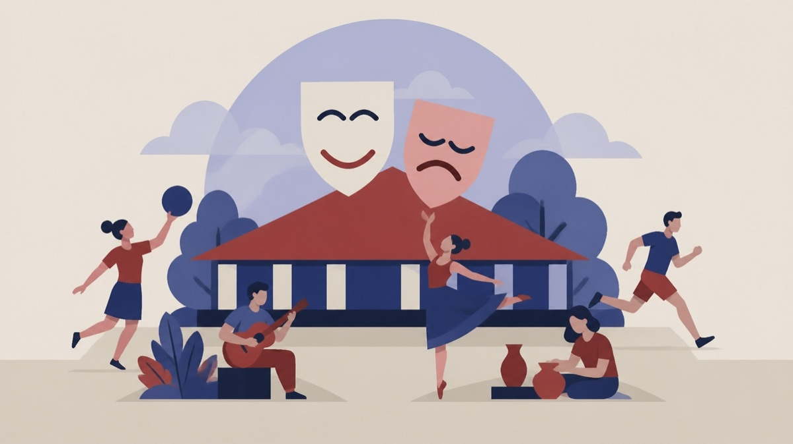

Besluttet 2. november, Kultur- og Fritidsudvalget, Assens
Godkendelse af driftsaftaler på kulturområdet
Skoler og børnKultur og fritid

Kort fortalt
- Hvem
- Kultur- og Fritidsudvalget, Assens Kommune
- Hvornår
- Mandag 2. november 2026
- Status
- Besluttet. Kultur- og Fritidsudvalget godkender driftsaftaler for perioden 2027-2030 mellem Assens Kommune og følgende kulturinstitutioner: Danmarks Fugle Zoo Frøbjerg Festspil Museum Vestfyn Musik På Industrien Vestfyns Teater Udvalget ønsker Museum Vestfyns indsats vedr. formidlingstilbud i hele kommunen belyst yderligere på et kommende møde Kultur- og Fritidsudvalget godkender driftsaftalen for Sangkraft Assens i perioden 2027-2030 under behandling af denne del af del af sagen.Beslutningen er forkortet her. Læs hele beslutningen
Er noget forkert her? Skriv til os
Læs hele sagen Kommunens egen tekst
Indstilling
Direktøren for By, Land og Kultur indstiller, at driftsaftaler for perioden 2027-2030 mellem
Assens Kommune og følgende kulturinstitutioner godkendes:
Danmarks Fugle Zoo
Frøbjerg Festspil
Museum Vestfyn
Musik På Industrien
Sangkraft Assens
Terrariet
Vestfyns Teater
Beslutningstema
I forlængelse af den nuværende kulturpolitiks vedtagelse i 2020 blev der i 2021 etableret
driftsaftaler med de otte ikke-kommunale kulturinstitutioner og -foreninger i Assens Kommune,
der modtager de største kommunale tilskud. De syv ovennævnte aktørers driftsaftaler udløber
ved udgangen af 2026. Derfor er der i sommeren og efteråret 2026 gennemført dialogforløb
med aktørerne, hvilket har resulteret i en række forslag til aftaler, som nu forelægges Kultur- og
Fritidsudvalget til godkendelse.
Tobaksgaarden har siden 2017 haft 4-årige driftsaftaler, der følger perioden for den regionale
spillestedsaftale. Tobaksgaardens nuværende driftsaftale udløber først ved udgangen af 2028
og er derfor ikke med i denne runde.
Sagsfremstilling
En grundlæggende ambition i Assens Kommunes Kulturpolitik er at udvikle en særlig
samarbejdskultur - både mellem kulturaktørerne indbyrdes og mellem aktørerne og Assens
Kommune. Driftsaftaler er et vigtigt element i samarbejdet mellem kulturinstitutionerne og
Assens Kommune, idet de blandt andet tydeliggør såvel forventninger som konkrete aftaler og
skaber rammer for en løbende dialog.
De nye forslag til driftsaftaler er - ligesom de tidligere – bygget op over en fælles skabelon.
De væsentligste fornyelser ligger i afsnit 3. Assens Kommunes mål og forventninger i
aftaleperioden og afsnit 4. Særlige fokusområder for aktør, idet disse to afsnit er gjort mere
fremadrettede end i de tidligere aftaler.
Særlige opmærksomhedspunkter angående de enkelte aftaler:
Museum Vestfyn
Tilskudsbeløbet er forhøjet med 200.000 kr. som er hentet fra den nu nedlagte pulje Kultur til
alle børn og unge, og som er øremærket til skoletjeneste
Tillægsaftalen om drift af stadsarkiv forlænges med et år, til den 31. december 2027, med
samme økonomi som den nuværende.
Musik På Industrien:
Tilskudsbeløbet er forhøjet med 40.000 kr., hentet fra Kulturpuljen og øremærket til festivalen
Musik Midt I Aarup, som afholdes af Musik På Industrien, og som i en længere årrække hvert
år har fået tilskud fra Kulturpuljen. At gøre tilskuddet til en del af driftsaftalen er en del af den
forenkling, der blev vedtaget i forbindelse med udvalgssag 7. september 2026 om Kulturpuljer
og kulturtilskud fra 2027 og frem, jævnfør økonomibilaget i den pågældende sag.
Vestfyns Teater
Beløb til teater på skolerne er indskrevet i aftalen. Midlerne kommer fra den nu nedlagte pulje
Kultur til alle børn og unge samt Assens Kommunes børneteaterkonto.
Aftaleudkastene er godkendt af kulturaktørerne og er vedlagt som bilag.
Flere af aktørerne har udtrykt ønsker om forøgelse af deres tilskud. Følgende har sat
specifikke beløb på ønskerne:
Danmarks Fugle Zoo: 200.000 kr. (fra 359.783 kr. til 559.783 kr.)
Frøbjerg Festspil: 35.000 kr. (fra 115.000 kr. til 150.000 kr.)
Aktørerne er blevet orienteret om, at de har mulighed for at fremsende budgetønsker til næste
års budgetforhandlinger vedrørende 2028 og frem.
Økonomi
Driftsaftalerne er forhandlet med udgangspunkt i den nuværende økonomiske ramme, hvilket
aktørerne er blevet gjort opmærksomme på.
Som led i den forenkling, der på udvalgsmødet i september 2026 blev gennemført i forbindelse
med omstruktureringen af kulturpuljer og -tilskud, er alle den enkelte aktørs tilskud nu
indskrevet i aktørens driftsaftale. Det betyder, at tilskud, der tidligere skulle ansøges om, nu er
gjort permanente. Til gengæld kan kulturaktører med driftsaftaler ikke længere være
hovedansøgere i projekter til Kulturpuljen, jævnfør retningslinjerne for puljen.
Beslutningskompetence
Kultur- og Fritidsudvalget.
Beslutning
Kultur- og Fritidsudvalget godkender driftsaftaler for perioden 2027-2030 mellem Assens
Kommune og følgende kulturinstitutioner:
Danmarks Fugle Zoo
Frøbjerg Festspil
Museum Vestfyn
Musik På Industrien
Vestfyns Teater
Udvalget ønsker Museum Vestfyns indsats vedr. formidlingstilbud i hele kommunen belyst
yderligere på et kommende møde
Lasse Tajmer blev erklæret inhabil i de dele af punktet, der vedrører Sangkraft Assens, og
forlod mødet under behandling af denne del af sagen.
Kultur- og Fritidsudvalget godkender driftsaftalen for Sangkraft Assens i perioden 2027-2030
Henrik Kirk blev erklæret inhabil i de dele af punktet, der vedrører Terrariet og forlod mødet
under behandling af denne del af del af sagen.
Kultur- og Fritidsudvalget godkender driftsaftalen for Terrariet i perioden 2027-2030
Kilde: Assens Kommune, Kultur- og Fritidsudvalget, referat fra mødet mandag 2. november 2026, punkt 5. Læs den originale sag hos kommunen.